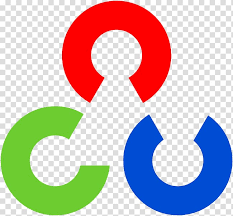
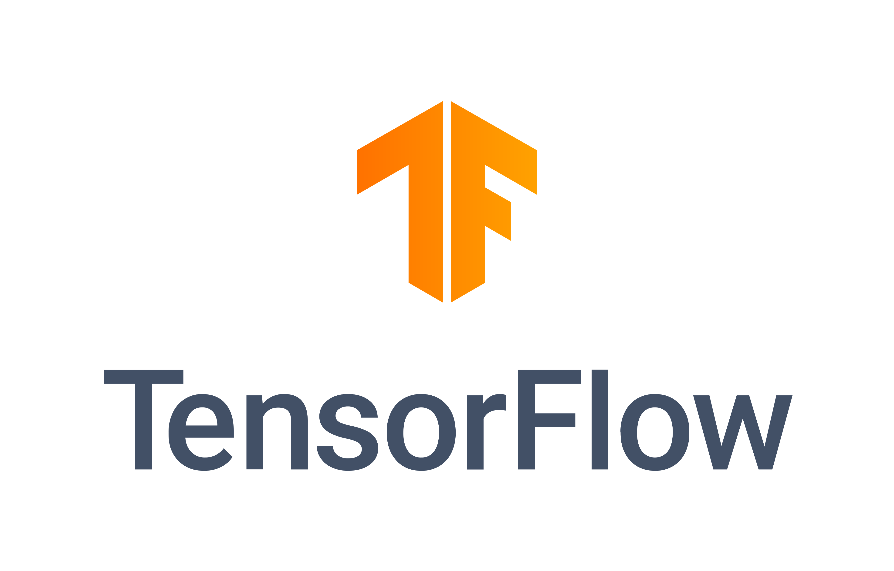
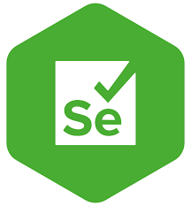
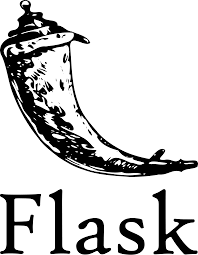
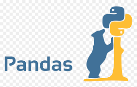
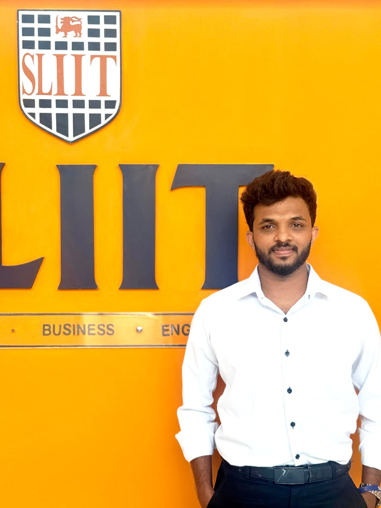

March 2025
Project Proposal (Presentation + Proposal Report)
Mark Allocation: 12%
Ominifix detects UI drift, repairs broken locators, and keeps bots running — with confidence-scored recovery that lets your teams focus on delivery, not maintenance.
Comprehensive analysis of RPA evolution, self-healing approaches, and research findings from industry and academia.
Robotic Process Automation (RPA) has evolved from simple screen scraping tools to sophisticated enterprise automation platforms. Research by Gartner (2023) indicates exponential adoption growth, with global market value projected to reach $25 billion by 2026.
Critical Challenge: Studies reveal that 30-50% of RPA implementations fail within the first year due to UI volatility and maintenance overhead. Traditional RPA tools rely on brittle XPath/CSS selectors that break with minor interface changes, leading to significant operational costs.
Self-healing automation research spans multiple domains: AI-driven locator regeneration, visual recognition systems, and machine learning-based adaptation. Industry implementations by Microsoft Power Automate and UiPath's AI capabilities represent current state-of-the-art, while academic research explores theoretical frameworks.
Research by van der Aalst et al. (2022) explores semantic DOM analysis for robust element identification
Computer vision approaches using OpenCV and deep learning for template matching (Chen et al., 2023)
Combined DOM and visual strategies showing 85-95% success rates in controlled environments
Bayesian and neural network approaches for healing decision confidence (Rodriguez et al., 2024)
Meta-analysis of 50+ studies reveals critical insights:
However, current solutions lack production-grade orchestration and monitoring frameworks for enterprise deployment.
Literature identifies critical gaps in current solutions:
Emerging Research Focus: Online learning systems, context-aware strategy selection, explainable AI for operational trust, and integration with modern DevOps practices for continuous automation maintenance.
Identification of missing components in current literature and solutions.
While individual healing strategies exist (XPath regeneration, visual matching, ML-based approaches), there is a critical absence of comprehensive frameworks that combine multiple recovery methods with confidence-based decision making.
The Research Gap: Hybrid models integrating DOM intelligence, visual signals, and ML confidence scoring in a production-ready architecture are missing from current literature.
Definition of the core challenge being addressed.
Traditional RPA bots are highly sensitive to UI volatility. XPath or CSS locators that work today may fail tomorrow after frontend changes, causing repeated maintenance cycles, downtime, and operational inefficiency.
How to reliably recover from UI-induced automation failures with high confidence, low risk, and minimal human intervention?
Five core objectives driving our self-healing framework research.
Build a systematic self-healing framework that detects and recovers broken locators.
Evaluate multiple healing approaches instead of single fallback rules.
Implement confidence-based decision making for safer automation recovery.
Combine visual signals with DOM reasoning in unified recovery pipeline.
Test resilience against practical RPA scenarios with real-world complexity.
Four-phase applied engineering approach with controlled experimentation.
Systematically inject UI mutations—attribute changes, structural shifts, element relocation—to reproduce realistic breakdowns.
Generate recovery candidates through DOM analysis, XPath/CSS reconstruction, and OpenCV visual matching.
Apply ML-based scoring with threshold gating to filter unsafe, low-confidence recovery attempts.
Return structured outcomes through APIs for traceable orchestration, monitoring, and scalable integration.
Enterprise-grade tools powering self-healing automation.

Computer Vision
Advanced computer vision library for real-time image processing, feature detection, and visual element matching in automation workflows.

Machine Learning
Open-source machine learning framework for building and training neural networks, used for confidence scoring and predictive healing models.

Web Automation
Browser automation framework for simulating user interactions, DOM manipulation, and cross-browser compatibility testing.

Backend Framework
Lightweight web frameworks for building RESTful APIs, service orchestration, and distributed healing architecture.

Data Processing
Scientific computing libraries for data manipulation, statistical analysis, and performance evaluation of healing algorithms.
Frontend Technologies
Modern web technologies for building responsive user interfaces, interactive dashboards, and real-time monitoring systems.
Computer Vision
Advanced computer vision library for real-time image processing, feature detection, and visual element matching in automation workflows.
Machine Learning
Open-source machine learning framework for building and training neural networks, used for confidence scoring and predictive healing models.
Web Automation
Browser automation framework for simulating user interactions, DOM manipulation, and cross-browser compatibility testing.
Backend Framework
Lightweight web frameworks for building RESTful APIs, service orchestration, and distributed healing architecture.
Data Processing
Scientific computing libraries for data manipulation, statistical analysis, and performance evaluation of healing algorithms.
Frontend Technologies
Modern web technologies for building responsive user interfaces, interactive dashboards, and real-time monitoring systems.
Assessment checkpoints, deliverables, and evaluation weights tracked through the project lifecycle.
March 2025
Mark Allocation: 12%
May 2025
Mark Allocation: 15%
June 2025
Mark Allocation: 10%
September 2025
Mark Allocation: 19%
September 2025
Mark Allocation: 18%
May and September 2025
Mark Allocation: 2%
October 2025
Mark Allocation: 2%
October 2025
Mark Allocation: 20%
November 2025
Mark Allocation: 2%
Core project documents, research records, and submission materials collected in one place.
The document gives the information regarding the statement of scope, objectives, overview, and outline of scope, an approximate schedule and people who are participating in a project.
DownloadThe document contains details like goals, objectives, important dates, milestones and requirements needed to start and complete the project.
DownloadA research paper contains writing that provides literature review, research methodology, analysis, interpretation, and argument based on in-depth independent research.
DownloadThe document contains the proposed solution to the research question, which was finalized after completing the research.
DownloadThe document describes the progress of the project within the specific time period and compares it against the project plan checklist.
DownloadThe document describes the progress of the project within the specific time period and compares it against the project plan checklist.
DownloadBusiness plan is very valuable when it comes to commercializing the product to the real world market as an organization entity.
DownloadProject evaluation checklist covering deliverables, assessment criteria, and evaluation checkpoints for project completion tracking.
DownloadMilestone presentation materials covering the research journey from proposal through final deployment.
Initial Presentation with Overview of Research Problem
View Presentation50% Project Completion
View Presentation90% Project Completion
View Presentation100% Completion with Deployed Solution
View PresentationA focused group of researchers guided by academic supervision and engineering collaboration.
Supervisor
Sri Lanka Institute of Information Technology, Malabe, Sri Lanka
nuwan.k@sliit.lk
Co-Supervisor
Sri Lanka Institute of Information Technology, Malabe, Sri Lanka
dharshana.k@sliit.lk
Team Member 01
it22000880@my.sliit.lk

Team Member 02
it22601124@my.sliit.lk
Team Member 03
it22352026@my.sliit.lk
Team Member 04
it22926630@my.sliit.lk
Reach out for research collaboration, project inquiries, or access to Ominifix resources and demonstrations.
Phone
+94 00 000 0000Location
Faculty of Computing, Sri Lanka Institute of Information Technology